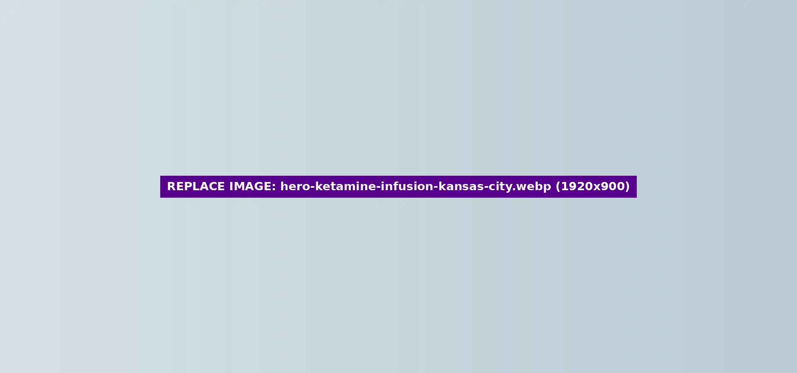
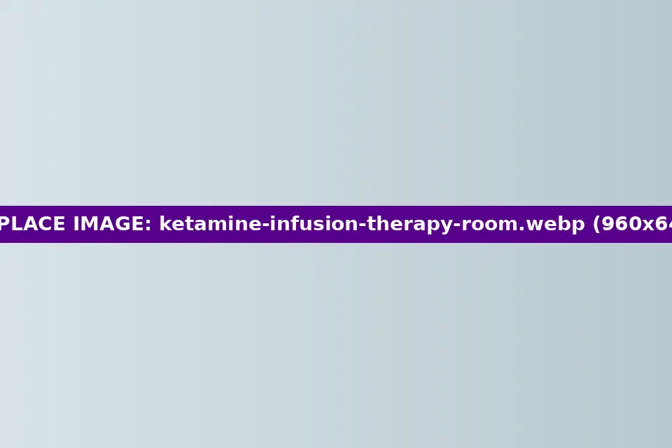
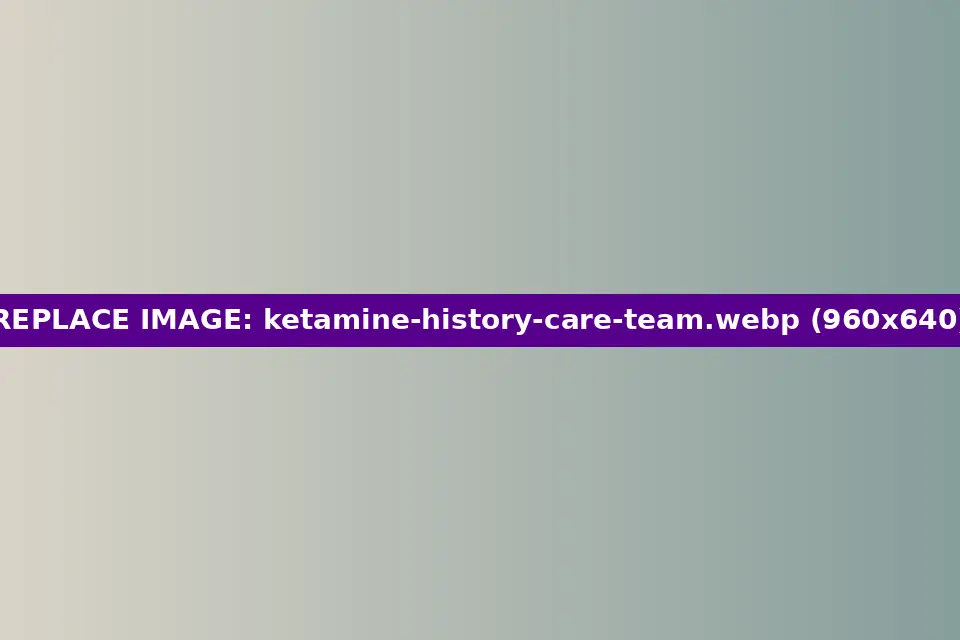
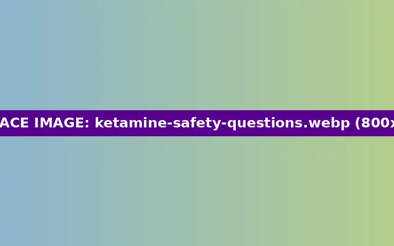
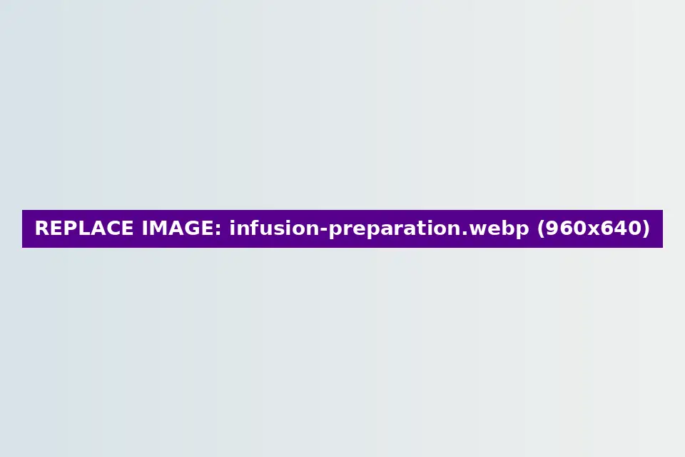

Ketamine for Depression
For adults whose depression hasn't improved after two or more antidepressants. Explore depression treatment

Balanced Ketamine · Kansas City Infusion Clinic
When standard treatments have stalled, physician-supervised ketamine infusions offer a different path. Our private suites serve patients from Kansas City, Overland Park, Olathe, Lee's Summit, Independence and the wider metro.
Balanced Ketamine is a physician-led ketamine infusion clinic in Kansas City. We treat adults with treatment-resistant depression, anxiety, PTSD and certain chronic pain conditions using low-dose IV ketamine, given over about 40–60 minutes with continuous monitoring. Most mood protocols start with six infusions over two to three weeks.
Last updated: · Medically reviewed by Dr. [Full Name], MD
Single infusions at Balanced Ketamine are $[XXX]–$[XXX] per session. A full six-infusion starter series is $[X,XXX]–$[X,XXX]. Most insurance plans don't cover IV ketamine for mood conditions, but we provide itemized receipts for reimbursement requests.
For adults whose depression hasn't improved after two or more antidepressants. Explore depression treatment
Support for persistent, hard-to-treat anxiety alongside your ongoing care. Explore anxiety treatment
Longer pain-protocol infusions for complex, nerve-related pain. Explore chronic pain treatment
Welcome to Balanced Ketamine
Balanced Ketamine was founded on one belief: people who have tried everything deserve another evidence-based option, delivered with dignity. Every infusion is ordered by our medical director, dosed to your body weight and history, and monitored from start to finish by trained clinical staff in a quiet, private room.

Ketamine infusion therapy is the slow intravenous delivery of a low, sub-anesthetic dose of ketamine (commonly about 0.5 mg/kg over 40 minutes for mood conditions) under medical supervision. Unlike daily antidepressants that can take 4–8 weeks to work, many responders notice improvement within hours to days.
Ketamine acts on the brain's glutamate system rather than serotonin, which is why it can help people who haven't responded to conventional medication. Its use for depression, anxiety and PTSD is off-label; our physician will explain what that means for you during your consultation.
No. It has a 60-year medical history.

Benefits of Ketamine Infusion Therapy
Ketamine is not a first-line treatment. It is most often considered when symptoms persist despite medication, therapy, or both. These are the conditions our Kansas City clinic evaluates for infusion therapy.
Extended infusions that may calm an overactive pain system in conditions like fibromyalgia.
Fast-acting support for treatment-resistant depression, suicidal thoughts and anxious distress.
May reduce intrusive memories and hyperarousal, especially when paired with trauma-focused therapy.
Considered for the depressive phase, in coordination with your psychiatrist's mood-stabilizer plan.
An option for frequent, refractory migraine that hasn't responded to standard preventives.
Pain-protocol infusions for complex regional pain syndrome and neuropathic pain.
Ketamine blocks NMDA receptors, which triggers a short burst of glutamate, the brain's main signaling chemical. That burst is thought to encourage new connections between nerve cells (synaptogenesis) in mood-regulating regions, helping the brain move out of rigid, negative thought patterns.
Traditional antidepressants gradually adjust serotonin or norepinephrine. Ketamine works on a different pathway, which is why roughly half of people with treatment-resistant depression respond in clinical studies.
| Factor | IV ketamine infusion | Esketamine nasal spray | Oral antidepressants |
|---|---|---|---|
| How it's given | IV drip in clinic | Nasal spray in certified clinic | Daily pill at home |
| Typical time to effect | Hours to days | Hours to days | 4–8 weeks |
| Main brain target | Glutamate (NMDA) | Glutamate (NMDA) | Serotonin / norepinephrine |
| FDA status for depression | Off-label | FDA-approved (2019) | FDA-approved |
| Dose adjustment | Precise, weight-based | Fixed doses | Gradual titration |
Our Team
Every patient is evaluated and treated under the supervision of our medical director. Registered nurses with advanced airway and cardiac life-support training stay with you during each infusion.
Dr. [Full Name], MD
Medical Director · Board-certified in [Specialty]
Takes under a minute. A care coordinator will call you within one business day.
[Street Address, Suite], Kansas City, MO [ZIP]
Monday–Friday, [Opening Hours]
Free on-site parking · About [XX] minutes from Overland Park and Lee's Summit
Call (816) 555-0123
Psychiatrists, therapists and primary care providers can refer patients directly. We share treatment updates with your team after each phase of care.
Refer a PatientYou may be a candidate if you're 18+, have tried at least two treatments without enough relief, and have no uncontrolled high blood pressure or history of psychosis.
Check My EligibilityOur Reviews
Rated [X.X] out of 5 from [XX] Google reviews. Individual results vary and are not guaranteed.
What to Expect From
A typical visit lasts about 90 minutes. You'll relax in a reclining chair while a nurse places a small IV and attaches blood pressure, heart rate and oxygen monitors. The infusion itself runs 40–60 minutes, followed by roughly 30 minutes of recovery before a friend or family member drives you home.

Call, text or submit the form. We reply within one business day.
We explain session fees, financing and reimbursement options up front.
We request a referral or recent notes from your current provider.
Meet our physician to review your history and confirm eligibility.
Begin your series with a personalized dose and full monitoring.
Most mood-disorder protocols begin with six infusions over two to three weeks. People who respond may then need occasional booster infusions, often every few weeks to few months. Chronic pain protocols differ and may use longer infusions over consecutive days.
Many people who respond notice a lift in mood or reduced suicidal thoughts within 24 hours of an infusion, and benefits usually build across the series. If there's no meaningful change after three or four infusions, our physician will discuss whether to continue.
Common short-term effects include a dreamy or detached feeling, temporary blood pressure rise, nausea, dizziness and blurred vision. These usually fade within an hour or two after the infusion ends. Continuous monitoring lets the nurse slow or stop the drip at any time.
Most insurers don't cover IV ketamine for depression or anxiety because the use is off-label. Some plans partly cover the consultation. We provide itemized superbills you can submit for possible out-of-network reimbursement, and we offer financing.
Ketamine may not be suitable if you have uncontrolled high blood pressure, active psychosis or a history of schizophrenia, current substance misuse, certain heart conditions, or are pregnant. Our physician screens for these during your consultation.
A referral isn't always required, but we do need records showing your diagnosis and past treatments. If you have a psychiatrist or therapist, we'll coordinate with them so ketamine supports, rather than replaces, your ongoing care.
The risk is low in a supervised medical setting. Doses are much smaller than anesthetic or recreational amounts, given only in clinic, and spaced out over time. We screen for substance-use history before starting.
Dr. [Full Name] is the medical director of Balanced Ketamine and is board-certified in [Specialty], with [XX] years of clinical experience and more than [X,XXX] ketamine infusions supervised. [Medical school], [Residency]. Member of [Professional association, e.g. ASKP3].
Last reviewed: . This page is for general education and doesn't replace personal medical advice. If you're in crisis, call or text 988 (Suicide & Crisis Lifeline) or dial 911.